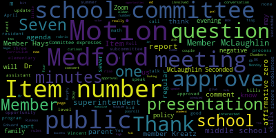
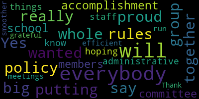
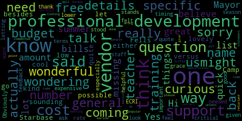
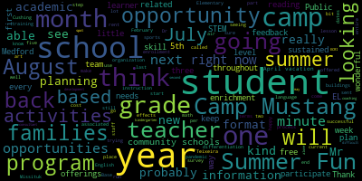

AI-generated transcript of Regular School Committee Meeting - April 4, 2022
English | español | português | 中国人 | kreyol ayisyen | tiếng việt | ខ្មែរ | русский | عربي | 한국인
Back to all transcripts
[Unidentified]: p.m.
[Graham]: and Alden Memorial Chambers in Medford City Hall. The meeting will also be available on Zoom. If you would like to join us on Zoom, you can access us at https://mps02155-org-zoom.us 927-680-72598. Member Ruseau, can you call the roll?
[Unidentified]: Yes. Member Graham? Here. Member Hays? Here. Member Kreatz? Here. Member McLaughlin? Here.
[Ruseau]: member must own. Remember, so here may long occur here.
[Graham]: Thank you. Seven present zero absent. Please rise to salute the flag. I pledge allegiance to the flag of the United States of America and to the Republic for which it stands, one nation under God, indivisible, with liberty and justice for all. Item number three, we have the good of the order this evening. Are there any members who would like to speak?
[Unidentified]: Member Kreatz?
[Kreatz]: Yes, I just wanted to say I'm really proud of our whole group for putting together the policy rules, and that was a big accomplishment for everybody. school committee members and the administrative staff. And I'm hoping that things will, you know, the meetings will be more efficient and run smoother. And I'm just, I'm grateful to everybody. Thank you.
[Graham]: Thank you.
[Unidentified]: Would anybody else like to say anything this evening?
[Graham]: Okay, moving on to item number four, the consent agenda. We have two items. We have the approval of bills and payroll, and we have the regular school committee meeting minutes from 3-21-2022. Motion to approve. Motion to approve by member Guafland. Seconded by member Kreatz. Oh, member Hays.
[Hays]: I had one question on the, sorry, the bills. I just, there was one- Mayor, sorry.
[Ruseau]: Vice Chair Graham, we should sever before we can talk about an item. Because it's part of the consent agenda.
[Graham]: Is there a motion to sever? Motion to sever. OK, motion to sever by member Kreatz, seconded by member McLaughlin.
[Unidentified]: Roll call.
[Ruseau]: Thank you. Member Graham?
[Unidentified]: Yes. Member Hays? Yes. Member Kreatz? Member McLaughlin? Yes.
[Ruseau]: Member Mastone? Yes. Member Ruseau, yes. Mayor Lungo-Koehn?
[Unidentified]: Yes.
[Graham]: Seven in the affirmative, zero in the negative. Motion to sever passes. So we have approval of bills. Motion to approve. Motion approved by Member McLaughlin. Seconded by Member Kreatz. Member Hays?
[Hays]: Just a quick question about them. There's one that's missing, the vendor number and vendor name.
[Graham]: Do you know what page it's on, Member Hays? That's a good question, because they're not numbered. It is... It's at the top of page seven?
[Hays]: Yes, I believe that was. The amount is the $58,897. It just didn't have a vendor name and a vendor number.
[Graham]: Superintendent, do you have any update on this one? I think the question is just what's the vendor name here? Oh, Mr. Murphy?
[Murphy]: Yes, so I can look into this further if necessary, but I believe it's a settlement which usually occurs when there's a dispute between a family and a district with respect to services. And so the name would be would remain confidential in this particular report, but So I believe that's what that's attributable to. But I will follow up. And I won't be able to confirm, obviously, the specifics beyond that. I can tell you whether or not I'm correct. And I believe that that's what that is. OK. Thank you. Thank you.
[Graham]: Thank you, Mr. Murphy. All set. OK. We have a motion to approve by member McLaughlin, seconded by member Kreatz. Roll call.
[Unidentified]: Member Graham. Yes. Member Hays. Yes. Member Kreatz. Yes. Member McLaughlin. Yes.
[Ruseau]: Member Mesto.
[Unidentified]: Yes.
[Ruseau]: Member Ruseau. Yes. Mayor Lunker.
[Graham]: Yes. Seven in the affirmative, zero in the negative. The bills and payrolls are approved. The next item under the consent agenda that was severed is the regular school committee meeting minutes from 3-21-2022. Motion to approve. Motion to approve by Member McLaughlin. Seconded by Member Kreatz. Roll call.
[Unidentified]: Member Graham. Yes. Member Hays. Yes. Member Kreatz. Was that a yes from Member Kreatz?
[Ruseau]: Member McLaughlin.
[Unidentified]: Yes. Yes. Sorry.
[Ruseau]: That's OK. Member Mestone.
[Unidentified]: Yes.
[Ruseau]: Member Ruseau, yes. Mayor Lungo-Koehn.
[Graham]: Yes. Seven in the affirmative, zero in the negative. Item number five, report of subcommittees. We have a rules and policy subcommittee minutes from March 30th, 2022. Member Ruseau, did you want to give us an update?
[Ruseau]: sure thank you um so um what was the date i'm sorry too many windows in my hand uh we met last week um to just the rules thank you the rules policy and equity sub rules and policy uh subcommittee met last week um on the 30th to um address two issues that was sent to the subcommittee uh one was on the attorney policy school attorney policy uh we made a lot of progress on that. We have one outstanding query that I have to make about one sentence in that, and we'll be bringing that back to the next subcommittee meeting, which will be happening at the end of April, hopefully to finalize that recommendation. And then the other, the majority of the meeting was spent on creating address code, For the district, and we heard from six members of the community, actually maybe one six sorry. And I thought we got some really excellent feedback about what people like and didn't like and really covered a bunch of the areas that we need to take into consideration when crafting a policy. In particular, things such as the vocational school, we wanna make sure to draft a policy that works for their very specific needs. So we're having another meeting. Again, I don't have the date yet, but the end of April, and we will be reviewing a couple of policies that, well, there was one policy we sort of briefly went over as a potential for our policy language. Since we're not editing an existing policy, we are drafting from scratch. So in that way, it makes more sense to look to other policies rather than starting from nowhere. So I'm looking forward to that next meeting where we'll focus on the language of a policy that we hopefully will be able to finish up in that meeting and bring back to the full committee.
[Unidentified]: Thank you.
[Graham]: Thank you. Is there a motion to approve the minutes? Motion to approve. Motion to approve the minutes by Member Hays, seconded by Member McLaughlin.
[Unidentified]: Roll call. Member Graham. Yes. Member Hays. Yes. Member Kreatz. Yes. Member McLaughlin. Yes. Member Mustone. Yes. Member Ruseau. Yes.
[Ruseau]: Mayor Lungo-Koehn.
[Unidentified]: Yes.
[Graham]: seven in the affirmative, zero in the negative. The rules policy subcommittee minutes are approved. Item number six, the report of the superintendent. Number one, superintendents comments and updates. Dr. Edouard-Vincent.
[Edouard-Vincent]: Good evening. I have a few important events that I would like everyone to take note of. That first tomorrow, April 5th at 4 p.m. by Zoom, the middle school lottery will be taking place. You are welcome to watch the lottery live on Zoom. Placements will then be posted to our website and school blog. Letters indicating the student's official middle school assignment will be sent out to parents and caregivers on April 12th. Please mark your calendars for the middle school welcome orientations. The McGlynn Middle School will be taking place on Tuesday, May 10th, from six to 8 p.m. And the Andrews will be taking place on Thursday, May 12th, from six to 8 p.m. at the Andrews. We look forward to greeting our incoming sixth graders. Also the before and after school lottery, the sign up for before and after school lottery opened on Friday and it will remain open until April 13th. The lottery will be held on April 14th. Next Monday, April 11th, pathways to high school mathematics. It will be discussed by Ms. Faiza Khan, our math director on Zoom to present to sixth grade families. Again, that's next Monday, April 11th for rising sixth graders. April is National Autism Month, which helps to advocate for global understanding and acceptance of people with autism. CPAC's monthly meeting will focus on autism and feature Heather McKinnon, who will discuss her experiences with autism and share her resources with parents and caregivers of students of all needs and abilities on and beyond the spectrum. The meeting will be held next Wednesday, April 13th at 6 p.m. via Zoom. The Zoom link is https://us02web.zoom.us/.j/.84130616016. I'm also pleased to announce that Medford High School Drama Club is back and they will be presenting Legally Blonde in the Caron Theater this Thursday, April 7th at 7.30 p.m., Friday, April 8th at 7.30 p.m., and on Saturday, April 9th, there are two shows. The first show, the matinee, is at 2 p.m. and the evening show is 7.30 p.m. Tickets are $10 for students and $15 for all others. Please come out and support our drama club. I also have some special accolades for our Mustangs. I wanna say congratulations are in order for our Mustangs Winter Color Guard team for both having an undefeated season and taking first place at the New England Scholastic Band Association Finals. Members of the team include students from our middle schools and our high school. Hard work pays off. Great job, Mustangs, our Winter Color Guard. Fabulous job. Additionally, congratulations are in order to our Mustang Boys hockey captain, Cody Tufts, for being selected by the Greater Boston League to receive the 2022 Boston Brains NIAA Sportsmanship Award. This award is presented annually by the Boston Brains and the Massachusetts Interscholastic Athletic Association, NIAA, to one individual from each high school ice hockey league in the state who best exemplifies the highest standards of fair play in sportsmanship. Cody received his award last Thursday at the Bruins game at TD Garden. Congratulations, Cody, for a job well done. I also want to just recognize that last week we celebrated Women's History Month celebration, and our District Attorney, Dio Ryan, came, and there was a full panel of women leaders from all walks of life, from female state trooper to newscaster to scientists and researchers. The superintendent present company was part of the panel. It was a wonderful celebration hosted by our CCSR students. And the students came and asked wonderful questions and the students were a great audience. And I just wanna thank our CCSR students for a job well done. and thank all of our panelists who came out to support Medford Public Schools last week. I also would like to recognize our Middle School Strings Ensemble. Under the direction of Ms. Sophia Chang, they received a gold rating this past Sunday. The ensemble received a perfect score on their performance. Such talent in the group. Congratulations to all of our students for their hard work, and of course to Ms. Chang. We'd also like to extend a special thanks to Tufts University for their generous donation of $1,000 to the Medford High School PTO. Those monies will be utilized for the junior class up all night party hosted after the prom. We send special appreciation to Mr. Rocco DiRico, who's the executive director of government and community relations for Tufts University, who helped to make this donation possible. We also want to recognize that Ramadan began on April 2nd, and it continues until May 1st. During this time, we extend our wishes of a happy Ramadan Mubarak to all of our Muslim families. April 4th through April 8th is also the week of the young child. This means it's a time to recognize that children's opportunities are our responsibilities. And we must commit ourselves to ensuring that each and every child experiences the type of early learning environments at home, at childcare, at school, and in the community. All those experiences promote their early learning. So again, the focus this week is the week of the young child. Lastly, April is also National Poetry Month. So I will end tonight's remarks with a quote from the American poet laureate, Amanda Gorman. If we merge mercy with might, and might with right, then love becomes our legacy. Thank you.
[Graham]: Thank you. I did have one question for you about the middle school math presentation. There were parents asking whether the session would be recorded on Monday evening. So for those who can't attend, they can watch it after the fact. Is that planned or can that be accommodated?
[Edouard-Vincent]: Yes, we can accommodate. And we have Ms. Khan with us here this evening as well. Ms. Khan.
[Khan]: Thank you. Thank you for having me here. Yes, the intent is to record it and we will have the slide deck also posted.
[Graham]: Perfect, thank you so much. Item number two, we have the recommendation to approve adoption of the new elementary math program. Ms. Faiza Khan, the director of mathematics.
[Khan]: Thank you. Thank you again for having me here. You have the report that me and Mr. Lucey put together. So I just am here to actually propose the adoption of investigations three as our elementary math program. Much effort has gone into it. Many stakeholders, in fact, all stakeholders have been involved in the process that started in October of 2019. We went on for good six meetings and then we had to put a halt on the process because we had COVID. We put the process on hold for a whole year and then we picked it up back in April of 2021. Ever since then, we have been meeting, we have been meeting with the parents, teachers have been piloting, and we have finally come to the conclusion that using the rubric that we the basics from the Achieve the Core Foundation that Investigations III is the program that best fits our students' needs at this point. The other two programs, I would say one other competing program was Bridges by the Math Center, almost half of our classrooms that are listed here. piloted that program. The rest of the district was using Envisions 2020. Much of the details are here in the report. Please let me know if you have any questions.
[Unidentified]: Thank you. Are there any questions?
[McLaughlin]: Vice Chair Graham? Member McLaughlin? Thank you. Thank you. to come for the presentation. And I just wanted to ask, I know we've talked about this before, but I'm sure you know the question I'm going to ask. special education supplements and differentiation for the math program. Can you talk to that a little bit?
[Khan]: Yes, absolutely. We had Ms. Alison Watts from Brooks School on this committee. She piloted it for fourth and the fifth grade, and she found the program to be in one of the best programs that does the differentiation and helps teachers differentiate their education, the content in many ways. So we got all in the rubric. There were questions about if the program is in line with the needs of our English learner population and our students with disabilities. And it seems like it provides a very good scaffolding support and it provides accommodations for students on each end, students who can take some challenges and students who we shall be supporting in many ways.
[Galusi]: I think all I would comment on that is that each lesson has three levels of addressing learner needs so that there is the intervention, the differentiation, the practice and the extension so that that's covered in every lesson.
[Unidentified]: Dr. Edward-Benson?
[Edouard-Vincent]: Yes, I just wanted to say thank you to Ms. Kahn and to all the teachers that, and the parents that were involved in this truly collaborative process. It took a very long time, but I know with all of the teachers, whether they were piloting bridges, using the envisions or piloting investigations that it was a lot of work for them to pilot it. But I truly feel like this was a, a truly collaborative process that working together they came and made this decision and i look forward to seeing how the district does with investigations three knowing that so many voices were able to contribute to the final decision so thank you for all your hard work regarding that thank you thank you and i i am truly grateful to all the teachers it was a it was a
[Khan]: tough year and to all the parents who made time to meet and to visit the classroom. So thank you to anybody who was involved in this process.
[Ruseau]: Member Ruseau. Yes, thank you. I also want to thank everybody involved in this process. I know that it was having a process just getting going and then having it derailed can make it a lot harder to get back to where you were. I do just, I want to mention that school committees are explicitly forbidden from selecting curriculum. So I would just ask that we actually not take a vote to approve or not. Obviously it should be in the budget, but I think that there's a precedent issue here. If we approve this, the next curriculum somebody else comes forward with, if we disagree with it, it would be awkward for us to either not be asked to approve it or to not approve it when in fact we don't have authority in that regard. So I would just ask that we not take any vote. I'm very supportive of this, but that's not our authority. So that's just my opinion. Thank you.
[Unidentified]: Member Graham. Member McLaughlin.
[McLaughlin]: Thank you. Member Ruseau, if you wouldn't mind sharing that information with us from the MASC, I think it would be really good to see, because I actually just received some varying information over the weekend about curriculum in another arena from DESE. So if you could share with us, that would be really great. Thank you.
[Graham]: I have a couple of questions for you from the chair. You mentioned that there were parents involved in the process. Could you talk a little bit about how they were involved in the process? Great.
[Khan]: So because the teachers are in the classroom, those teachers were in the committee first. We are the ones who started with them from October, 2019. Parents got involved, I would say, much later in the process, which is almost when the programs were being piloted in the classrooms. And the reason behind that was that the teachers had a I had gotten a chance to take a look at the five different six different programs and got a chance to narrow it down to two or three, based on some basic rubric, and we went from there so. Once parents were involved, there were four meetings that I held with them of about an hour and a half each. They looked at a couple of surveys that I had sent out to the teachers, which was based on the rubric, so they knew how the process is going in the classrooms, how each program is being ranked by the teachers. We also talked about how learning mathematics learning has shifted in the most recent years and and that's how the process actually started with our. educators who were in the committee as well. The parents brought a wealth of information. I learned a lot from them. They put me in touch with some of their either colleagues or their acquaintances in other districts. So I got a chance to talk to the the educators and the superintendents from other districts as well. So it was really beneficial for me personally and professionally. And I also made sure that I took the discussions that took place with the parents back to the teachers in the committee. So that's how we worked it all out. And then at the end, teachers are the one who filled out the rubric. and decided for investigations three.
[Graham]: And can you talk to us a little bit about what the rubric contained, like what were the factors they were looking for in the rubric and yes that this prevailed it was it like overwhelming majority was in agreement this way and the reason i ask is because when we started this conversation we talked about ed reports as being sort of a jumping off point and the investigations curriculum does not fare as well in ed reports as bridges does so i'm just curious which what there's no like red stop signs anywhere but i'm just curious what the, like how we sort of progress through the logic. I think for people who are really interested in improving the math instruction, that would be helpful to know.
[Khan]: Yes, so our rubric had eight different pieces in it. It started with curriculum, with instruction. It also had professional development in it. It had the implementation of ease in it. It had technology in it, and it had supports for our vetting population in it. I can give you the exact eight of them. But it was shared with the teachers and of course the parents. So everybody was aware of what is being looked at in the rubric. The survey that was sent out twice, it was the same survey and it had 11 questions on it. Basically one question, main question from the rubric And then we added three more to make sure that it covers certain aspects of that rubric much in detail. So as far as Ed Reports is concerned, we did ask investigations as to why it's not ranked where we would like to see it. And they wrote back to us. The question was, what were the ed reports findings for investigations three? And they said that all grade levels K through five met the expectation for rigor and balance. Grades K, one, two, and five were found to meet and grades three and four were viewed as partially meet the expectations for focus and coherence. All grade levels K through five were found to partially meet expectations for the practice. standards and making connections to the content standards. And they have replied back in a full report, whereas they have given the reasons for how ed reports gave them initial reviews and they haven't gotten to the second round just yet or that investigations had put in a question there that in a certain grade level that belonged to a grade level that was much higher. And so they just report wants to make sure it's meeting the criteria for that particular grade level, not the grade level higher. in certain ways they did not pass the test. I did ask the same question and I'm happy to share this report with any member who is interested. I asked the same question from the surrounding districts that have adopted investigations. They include Brookline, they include Newton, Wellesley, Boston and Cambridge's piloting. currently. And they all said that they were not concerned about this piece because they found it to be a program that was very much in line with problem solving. It fit the needs of most educators and that it was a program that was much in line with their middle school program, which is in most cases illustrative mathematics.
[Unidentified]: Thank you. Are there any other questions for Ms. Khan? Thank you very much.
[Graham]: Number three, we have overview of summer programming opportunities at Medford Public Schools. Ms. Suzanne Galussi, assistant superintendent of elementary, and Dr. Peter Cushing, the assistant superintendent of secondary.
[Galusi]: Good evening. Thank you very much. Dr. Cushing and I are just going to present an overview of some of the summer programs that we're looking at in the process of planning. These are not the final detailed plans because they're still in progress, but we're here to just highlight some of the planning that's going on right now and are more than welcome to answer your questions at the end of the presentation. So we're going to start off with Summer Fun as well as a new opportunity. So Summer Fun is an annual tradition here in Medford Public Schools. It's part of the community schools. It's back. We are going to, it was very successful at the Missituk last year in its combination partnership use with the Tufts Pool. So we're going to have Summer Fun back at the Missituk this year with the adjoining Columbus Park. in the air-conditioned facility, it makes for a really nice place for summer fun. Summer fun offers various activities for children ages five to 11, including arts and crafts, sports-related activities, academic-based activities, and of course, as I mentioned, swimming. The flyer went out last week. The director, Mr. Anthony Petrellis, fifth-grade teacher at the McGlynn Elementary School, is back, and so he sent out all of that information. We do have it here hyperlinked for you, but it did go out to families. It will begin on July 5th and end on August 12th. Something that's new this year that we're kind of testing out a little bit, there was this outside organization called Kids to Pros, and they reached out to Mr. Maloney in community schools with an opportunity looking to rent one of our buildings for their enrichment summer camp opportunities. The way they structure their camps are they provide families the opportunity for students to select like theme-based activities in the areas of either STEM, sports, or art. We are going to kind of trial this to see how this program's offerings could maybe support the families of Medford and or inform our offerings for summer fun, which is why we're just going to rent the Brooks School and If you look at the dates from July 5th to August 5th, so just about a month for us to kind of get to know the organization and learn a little bit more about the offerings to see how it could enhance our current programs. More information will be shared with families in terms of enrollment if they so wish to participate in this opportunity.
[Cushing]: So, I apologize. The Medford Public Schools Special Education Services will be offering the extended school year services there for our students. The first program is six weeks from July 5th through August 12th, and it includes 29 days, and that'll be at the Roberts and Medford High School. Four-week program runs from July 11th through August 5th. at the Roberts and the Medford High School as well. Four-week MEEP and language-based programs will be running from July 12th through August 4th. It's a Tuesday, Wednesday, Thursday for 12 days throughout the summer and specifically at the Roberts. And then the tutoring program running at the Missittuc three days a week as well, Tuesday, Wednesday, Thursday. And so the ESY program directors are Kim Clinton and Julie Santos. Families will be contacted in the next couple of weeks, and information will be provided specifically to those families for extended school year services.
[Galusi]: Thank you. And per Mr. Teixeira, for the English language learner opportunities this summer, the first one, the EL students were offered this wonderful opportunity pre-pandemic, and so it's back this year. And the STARBASE, which is a STEM related camp for students in grades six and seven will be able to participate in this program from June 27th to July 1st. You'll see that it is at Hanscom Air Force Base and Medford Public Schools will be transporting the students that participate in that camp so that the transportation is on the district. It is a free camp, but students are able to engage in STEM related activities. It's a wonderful, wonderful opportunity. And then the following are English language learners enrichment and or assistance for over the summer. You'll see that he has broken it up into three levels for the dates for elementary students, middle school students, and high school students throughout the summer for the month of July. He does, he is very clear that the EL enrichment programs are dependent upon the hiring of certified ESL teachers. And on the next one too. And so in looking at starting next year off and helping some students transition academically to the next school year, one of the things that I'm in the process of planning right now with staff is for some, as I'm calling it right now, but step up to academics opportunities to go over reading and math skills in the month of August. So this way, Our teachers and our students will have July to enjoy and rest and recuperate. And for those two weeks where the camps have ended and we're transitioning to start the new school year in August, we're looking to have some academic step-up opportunities for students in grades one through five. And so what we're looking at right now is having those be probably about 90 minute sessions, two to three times a week, where students would come to their respective schools and have some skill-based instruction in reading and in math. As I said, we're in the planning stages still, so I'll have more finalized information for you a little, probably next month when we send it out to families.
[Cushing]: Uh, so last summer, uh, department elementary and secondary education provided significant grants, uh, to certain districts, uh, based on, uh, performance in secondary math. And so right now we have no idea if this grant is going to be presented to us again. Um, but there's a high likelihood given that we were offered one for April vacation. that families were notified of today so that they have time to plan, prepare, and get their students ready. We highly anticipate that DESE will make these available. The acceleration camps and acceleration academies have been a hallmark of DESE's work over the past year and a half. And we definitely feel that they will be returning. If not, we'll look to see what we can do to stand up our own academy with available resources through the state and federal grants. It may not be as robust as the ones that DESE provides because they're providing tremendous resources, but we will do the best that we can. So we're looking at focusing on our rising grade eight and rising grade 10 students. Staffing last year was four middle school math teachers and three high school math teachers. We actually had a last minute shift based on the number of students who are coming in. And then the focus will be focused on specific standards acceleration. through looking at math growth assessments, looking at what students have been doing throughout the year, and where we best need to support them through these types of math acceleration camps. Also, at the secondary level, Uh, we're looking in the planning stages of academic skills, similarly, uh, to the elementary 90 minute or half day sessions. Want to make sure that we get kids in, get a flavor, get a taste of getting back into school in late August or mid August to late August. Um, and really focusing on a steam type camp, uh, to really bring in the arts, uh, as well as those normal STEM activities, but try to find ways to engage students across various disciplines. and to give them some skill building without it specifically being focused on reading and math in particular, but trying to really help support students. We're also looking to bring back the Medford Vocational Technical High School Summer Discovery Vocational Program, which is specifically focused on grades six through eight. This program is heavily dependent on teacher availability, which vocational shops are able to run, and then credit recovery at Medford High School, which is the traditional summer school. that we've spoken about frequently, but to give the dates, we'll run Monday, June 27th through Friday, August 12th. Our snow days this year pushed us about a week later than we would normally be, or I shouldn't say normally, a week later than we were last year. We will have off the four-day weekend around July 4th. That was the first ever last year, and it seemed to work well for families and educators as well. We hope to have license to MPS educators, but we will expand as necessary. And we also added a Councilor last year. We'll maintain that for this year as well. And detailed information is being shared with families. That process is starting so that there's an early opportunity for families to know, or perhaps a course correction as has been discussed previously.
[Galusi]: And as this committee knows, we started Camp Mustang in the height of the pandemic as a way to keep students anchored to their school buildings and to make sure that we kept that focus on the social emotional needs of our students. So this year we've kind of called it Camp Mustang 2.0 just because we're trying to keep current with the needs and the demands of our students. So the format of Camp Mustang 2.0 during the February and April vacation seems to be quite successful. We have a lot of enrollment right now for the April vacation as well. And I think what we would like to do in order to plan thoughtfully and meaningfully for camp Mustang in August is for the participating families that took place in camp Mustang for February vacation and April vacation will be sending out a survey. to elicit some feedback based on the format, student satisfaction, the program that we offered, just so that we can use that feedback to guide our plans for the August Camp Mustang format. So there'll be more information on that once the survey is sent out, and we'll keep you updated.
[Cushing]: So last year, the music program started their first ever, to my knowledge, summer instrumental music camp. This was done out of the fact that instrumental music had taken such a hit during the pandemic, with really prohibitive restrictions for spacing, for using wind instruments, for singing, all those types of things really were prohibited during the height of the pandemic. And this camp was extremely well received by the educators who put it on. and by the students and families who chose to attend. So we're extremely excited to be able to offer this two-week instrumental camp and supporting students in the rising grades four through eight. Students strengthen their music skills and really were able to focus on rhythm, sight reading, music reading is a critical skill for students in this area, and instrumental terminology. There are other programs that are also being offered through the Medford community schools. Uh, right now a filmmakers collaborative is working on finalizing their application. Uh, Celtics basketball camp that ran last year, uh, will run again. The Medford basketball camp run by the Medford, uh, boys basketball coach will also be running. We're adding a Medford high school volleyball camp. uh, as well, uh, the friends of the fells, uh, I want to thank Marilonga current for connecting us to make sure that that program will also be returning to Medford high school this year. And they will be using, uh, the facility at the, uh, at Medford high school to be able to launch their camp as well. Um, and we're in the initial planning, uh, by initial, I mean quite literally just started having this conversation last week around a cheer camp, and seeing what we can offer for the youth of Medford, where it seems that our feeder programs for cheer at the high school are not as robust as they once were. So what can we offer around a cheer camp for students here? And we'll be sharing out information as it becomes available. That is the end of our slide deck and happy to take any questions you might have.
[Unidentified]: Member Ruseau.
[Ruseau]: Thank you. There was a lot there. I noticed this. There's a focus on the summer for the summer stuff for the rising 10th graders. Can you just tell me, you know, Desi apparently feels like these rising 11th and 12th graders don't need anything. I'm assuming we have a good number of rising, we don't have the MCAS results yet. So I'm gonna go out on a limb and bet we have a number of rising 11th and 12th graders who still have not passed their MCAS competencies. Pardon me, I hope that was not really loud. Since we're not offering any camps for them, what are we doing for those kids?
[Cushing]: So we actually may consider doing that. Um, you know, you bring up a very good point about the fact that the grant opportunities only cover 10th grade. Um, but it is something that we can look into and consider. I will say that last year, um, we have not had this problem for the April vacation math acceleration Academy, but last summer we did have a staffing challenges to stand up the math acceleration academies. I think that there are our teachers and educators are working tremendously hard. They are doing yeoman's work. And I think honestly, there's there's sometimes there's not enough money to offer people, um, to be able to say, you know, in the summertime to be able to offer, um, enough to be able to, uh, to do that. So we can definitely look into it member Rousseau and see what opportunities there are for those students who may need that. I think also too, it may look at, um, we're right now offering an afterschool program for math and an afterschool program for ELA, which will start. which is not directly connected to MCAS. It is simply looking at what the map growth data tells us and how we can best support students outside of the statewide high stakes testing, because I think we need to get away from that narrative. And the thought process that I've been having with some of the directors is when, how can we stand these up in the fall to be able to support students as we start the year to support students moving throughout the year, rather than a reactionary phase at the end of the year.
[Ruseau]: Can I just follow up real quick?
[Cushing]: Absolutely.
[Ruseau]: So the current 10th graders are the first students, the 11th and 12th graders are excluded from having to have passed their competencies to get a diploma, correct?
[Cushing]: Yes.
[Ruseau]: Yes. I realized that we won't really know until we get MCAS results this fall or this summer, whether we're talking about, I mean, I don't know what a normal year, how many 10th graders are not going to get a diploma if we don't do something, if it's two or three, but if it's, and I suppose the state is very much waiting, I'm sure Jesse is already feverishly looking at results, and either there's a huge wave of students who they're gonna have to either not give a diploma to after they, get through 12 years of school, or they're going to have to throw out the competency requirement. And I'm sure that will be a front page story for several days. But I always want to go on the assumption that DESE won't change their mind. And so if they're not going to change their mind, I just want to make sure we are maybe it's a bit cart before the horse since we don't have results, but I'm just very worried about 10th graders that are not going to get a diploma and are we throwing enough resources at them to get them there? So I may be off topic slightly, sorry.
[Cushing]: No, I don't think you're off topic. I think you bring up a thing for us to consider and to look at further. I will say just one other thing though, that throughout a student's 11th and 12th grade years, There are multiple opportunities to demonstrate competency that are presented, and there are opportunities for the school to submit appeals and do a number of things so that the number of students who actually don't receive a diploma is not as high as one may think.
[Unidentified]: Are there any other questions? Member Hays?
[Hays]: Hi, this is a great list of, there's a lot of things to do this summer, it's wonderful. I'm wondering if it's possible to go through and let us know, besides the one, the really cool sounding Starbase that you said was free, can you talk about which kind of the general, not specific cost, but which of these might be either free, it would be lovely, or low cost, versus ones like the Fells Camp is wonderful, but it actually is quite expensive. I'm wondering which of these might be lower cost, if you know.
[Galusi]: So I think the greater differentiation would be that the camps that are run through community schools probably have an associated cost. And the opportunities that are run through the school side, Metro Public Schools, are free of charge. So when we're talking about the academic base, the Camp Mustang, clearly ESY and what Mr. Paul Teixeira for EL, those are free of cost. summer fun, uh, the camp based ones and the camps that Dr. Cushing spoke about for community schools probably have associated.
[Cushing]: And generally speaking, um, that all of these programs that run through our school will offer some type of assistance or we'll look at a Medford resident, um, needing assistance over perhaps other, uh, communities residents. The other thing is, is that I do want to mention that camp Mustang, um, the various academic academies outside of the EL and the ESY and the credit recovery. We're able to do that because of the federal and state COVID relief monies that are available to us at this time. And so whatever those expenses are, as we look toward fiscal realities in the future, we're able to offer these last summer, this summer, but you know, we may have to find creative ways to pay for staffing to do things if they continue in the future.
[Unidentified]: Thank you. Member McLaughlin. Thank you.
[McLaughlin]: Thank you for the report. It is really extensive and really exciting to see so much more opportunity in the summer for our kids and It's great when they're through the school and they are affordable and free for, like you said, for many of them in the community schools actually even some of the cost of the community schools are pretty reasonable. I know that summer fun camp which we've been part of for many years was really reasonable and really enjoyable so I really appreciate you putting this together. I did want to just put out there. food for thought. Um, and not that I necessarily expect a response now, but I would just like, you know, folks to think about it, have some open conversation. And I mentioned this to, um, Ms. Bowen as well, um, because it's been brought up several times by a number of families about having accessible summer programming for, um, students with disabilities, English learners, obviously beyond ESY, beyond the academic, beyond the EL programming. Um, so for the camps, the, you know, um, sports activities, those sorts of things, which I know that our response, the initial sort of response is, well, everything's inclusive. And of course we are, but it's more than being inclusive. It's about being adaptive and accessible. And so that making sure that we're thinking about that for programming. So for example, we have these really great unified sports programs now that are starting with miss Andre, who's been doing wonderfully with them. And the kids are really enjoying them. And so many kids that maybe are struggling otherwise are really coming out in those groups. So it's really heartening to see And I'm wondering what and how something like that could be integrated into summer programming so that we're making sure that we're being inclusive. And I know Ms. Andre had mentioned something about, you know, even in tandem with like an ESY, right? So they have say morning ESY for students and then an afternoon integrated program with and without students with disabilities, maybe with, you know, some opportunities for high school students to participate, what have you, but just sort of putting a bug in people's ear to be thinking about like, what does that look like? And also we have a new outside, program with Spotlight Productions. They're doing an adaptive theater program now, which is great. And, you know, 800 of our students are on IEPs, which is not an insignificant number, obviously, in a population that I think we should, you know, really think about. And then I think a lot of people in the world as well, just because of, you know, everything that's been happening in the country the past few years and the inclusive nature of people's thoughts as they're looking at equity, diversity and inclusion around the globe, really. people are just thinking about how do we make this into something broader and bigger and thinking about everybody. And so I guess I just would love to be part of that in whatever way we can to be thinking about what that looks like. And, you know, there, I think it's something like 50 million people with disabilities in the world. And there's a big market out there. There's a big untapped market out there. And I think you'll see a lot of, you know, people in the disability community going to, you know, specific camps, what have you, there's a lot of opportunity for them, but also for the camps and potential revenue building. So just wanted to mention that too. Thank you so much for this. Thank you.
[Graham]: If I may, I just have one question about the academic skills camp at the middle school level. When we talk about academic skills, are you talking about things like executive function skills?
[Cushing]: So that wasn't initially considered. However, however, I think like member Ruseau made a great suggestion earlier. I think that's a great suggestion. I will say that, um, and doing my own research personally for how best to instill executive function skills in a child, which turns out I now have to, um, the only reason why I say that is, is because I think you make a really great point. I also think that, um, looking at various people I know, um, who have older children, the executive coaching, executive function coaching has exploded. And I think that those types of resources is something that we really should be taking consider at, to be taking gander at. And so I'm definitely happy to add that to the slate.
[Graham]: And is that program an invitational program or is that like an open to anyone in the district?
[Cushing]: The idea for the academic skills on this is actually for it to be open to anyone. Right now, and this may change based on funding available from DESE, The idea is to simply give kids fun things that have strong academic skills built into them. So it's kind of like a sneak attack and we give them good foundational skills and steam. All right, so science, technology, engineering arts. math in those two weeks prior that gets them in the mood for school again, without being specifically focused on reading, specifically focused on math, but gives them some of those skills in a way that is overall focused on fun. So it's not a, oh, I have to do this. It's a, I want to do this. I want to be engaged in the fun of learning for this period of time. And I think executive coaching would actually be something good to consider how to organize a binder, how to organize notes, how to, you know, plan your day, various things along those.
[Graham]: Yeah, I mean, I know we have Dr. Cushing spoken about this at the middle school level a couple of times offline and there's a lot of parents out there. especially at the middle school level, where as a parent, you just have no visibility to what is happening in the school at all. There's no conferences, like you really have to work to know what's going on. And if your kid is struggling with like the basics of like organization, it's even harder to help them at home. So thinking about not just during summer, but in general, how do we do a better job of helping kids get good baseline functional executive functioning skills in middle school to sort of position them to be ready for high school, I think would be a huge asset both in summer and in some sort of afterschool something or other and in the curriculum in middle school. But I definitely think there's an opportunity to like weave that in. And I think there's a lot of parents out there who, if that was part of the process would be quite interested in figuring out how they can get their kid to engage for that 90 minutes a day. Are there any other questions?
[Edouard-Vincent]: Yes, I just wanted to say thank you to Ms. Galusi and Dr. Cushing for pulling, and also Ms. Bowen for pulling all of this, all of the summer programming together. As you can see, there is a lot going on and member Graham, we are making a serious effort to try to communicate early so that people can start thinking about all of the options that are gonna be available as they're beginning to plan for the summer. So I just wanna say thank you for all the hard work bringing everything into one presentation. And when you look at it collectively, you realize that we really are offering a lot for our community. Thank you to the both of you.
[Graham]: Thank you. Item number four report on the superintendent's listening tour in the Medford public schools, Dr. Edouard-Vincent.
[Edouard-Vincent]: For this presentation, during the month of March, I embarked on a listening tour. And this is going to be kind of a high level overview of what transpired during this listening tour.
[DnBk5C8-dFs_SPEAKER_07]: So the first thing I can say is the journey.
[Edouard-Vincent]: So the journey I took, it started in the month of March. I embarked on a listening tour within the district. And I wanted to say in light of all of the adjustments and changes that we had to make as we navigated through the pandemic, it truly would not have been prudent to conduct business as usual. Yet instruction was taking place every day in all of our classrooms and schools were up and running. So in my continued pursuit of system coherence and the implementation of our strategic plan, the time was right to gather information about what was happening in Medford. So how did it come about? Drawing upon the research work that my superintendent resident, Ms. Carmen Williams was working on, building upon the administrative professional development that took place this year. I implemented portions of the coaching conversation guide, which was a protocol that we used on professional development. But in addition to that, we spent a significant amount of time this year looking at data. Street data, map data, satellite data, all different forms of data. And this was the book that was used. And in this particular book, which is a great resource, Street Data by Shane Saphir and Jamila Duggan. It also talked about the power and the importance of listening and listening being an important tool. So as I embarked on this journey, I kept in mind, empathy, I hear you, equity, I see you, collaboration, I am with you.
[DnBk5C8-dFs_SPEAKER_07]: So my why.
[Edouard-Vincent]: Well, data matters, but alternative data also matters. Standardized assessments don't always tell the whole story. Our stories matter. And with that, I think about self, social emotional learning in general for adults as well.
[DnBk5C8-dFs_SPEAKER_07]: And listening matters.
[Edouard-Vincent]: So the five tenets of social-emotional learning, you've seen this wheel before. This was taken from the castle out of Chicago. The five tenets of social-emotional learning are self-management, responsible decision-making, relationship skills, social awareness, and self-awareness. All of those five spokes
[DnBk5C8-dFs_SPEAKER_07]: are what make up the entirety of social and emotional learning. As I went on this listening tour,
[Edouard-Vincent]: Thus far, I have spoken with about 101 educators within the district, teachers, paraprofessionals, librarians, all different special educators, English learning teachers, specialists, all across the district in all of the different schools. In addition to meeting and listening to teachers and staff. I also had conversations with principals and administrators, and at this point in time, I have met with 20 of them to have conversations with them about problems of practice and saying, what's a challenge that you're facing? Let's work together. Let's think together about this possible problem of practice. Let's troubleshoot together and see if we can come up with solutions. Sometimes we could, sometimes we couldn't, but again, it was an opportunity to listen. As I went on this journey, I am including here a few quotes that kind of jumped out at me. Teacher said, I love ECRI. I want math professional development to be like ECRI. One point person to come to model in my classroom. Another teacher said, we want someone to work with us. It is going to be a new program, and they were referring to math, having a point person with expertise in an area. Another said, responsive classroom block is really working. In another building, our school adjustment Councilor is amazing. Eleni, who's a professional developer with ECRI, the teacher said, it's the best PD ever for them and they loved the coaching with the Zooms. Others said, bring back the joy, bring the joy back. It's a great day to be a Mustang. And they wanted t-shirts to be made for all the students to say, it's a great day to be a Mustang for next school year because they feel like the pandemic has exhausted all of us. Other teachers asked for more teacher led professional development. There's really this thirst for teachers designing to work collaboratively together to learn from one another, even a suggestion of being able to go and visit. So when I was at the middle school, one of the teachers suggested, can we go up to ninth grade. do professional development, see what's happening in ninth grade and come back and say, oh, this is how we can make adjustments to practice. So teachers gave wonderful examples, their best thinking and just different ways of looking at how we can improve the district and make a difference for our students. Another teacher said, we need more support, training and grace. Asking us to really keep that in mind because we've been working in a pandemic and there are a lot of unknowns that we had to experience and go through. But that was something that had just jumped out at me when it was said. Another session, they said, bring back book groups. bring back professional learning communities. And so it was something where if I think about key themes, professional development ended up really surfacing as an area, Dr. Cushing, could you please advance? Thank you. Professional development really surfaced as an area that Teachers want to continue learning, learning in different ways, learning from strong educators and quality professional development and having opportunities to learn from one another. So that was definitely a theme that that surfaced. Teachers talked about self social emotional learning and working with students and trying to meet the needs of students. And as I had mentioned again responsive classroom and those kinds of things that we were being very intentional about to meet the needs of our students, bringing back the joy, because there were so many rules and regulations during the pandemic. masks shields sanitizer, you know distance. And so finally kind of getting back to some sense of normalcy. And so that kind of came through like they're, they're ready to bring back the joy for the students and get back to some sense of normalcy. Teachers did ask for more support as we think about the structure of the district, thinking about our growing EL population, students with disabilities, Councilors, to make sure that we keep those resources in place. And additional staffing, like this year with the pandemic, sometimes we had some positions that still were not filled despite having them posted for months. And so thinking about, oh, I wish if there's a possibility to have more staffing, if we could have an additional paraprofessional or something like that. So that was just something that also kind of surfaced. And so I just wanted to point that out as some of the key themes. I really wanna just also say thank you right now, a special thank you to all the staff that were part of the listening tour. I wanna say that your willingness to share, be transparent, be vulnerable, and provide feedback to me was greatly, greatly, greatly appreciated. Your voice matters and it counted. And in closing, I just wanted to say there was one final slide, Dr. Cushing, homage to you, Dr. Cushing. I ended with saying that to the teachers that were in staff and administrators that were part of the listening tour, that I am your proud superintendent. And yes, indeed, it is a great day to be a Mustang. Thank you.
[Graham]: Thank you, Dr. Edward-Vincent. Are there any questions?
[Unidentified]: Member Hays?
[Hays]: I just want to thank you for this. I think it's helpful, especially the timing of this rate, given that we're coming up on budget season, and it's good to get this feedback of what teachers are letting you know they feel like they need, because that's important. Obviously, it's critical for us to know that as we look at the budget. That one quote that really stood out to you and stands out to me too, and I'm curious if you have any more details about what this teacher or support staff, I don't know who it was coming from, you said, we need more support, training, and grace. Did they talk about areas where they felt they needed more support and training in specific, or was it more just a general?
[Edouard-Vincent]: It was really, in that particular quote, it was a group of students, not a group of students, it was a clustered group of teachers. Because during the listening tour, I met with some people one on one, and we tried to have no groups, no larger than four. And so it was, you know, they were talking about support, time to learn the new curriculum. I think, Grace, in the sense of like we're bringing on new programming, we just went through all of this adjustment. Please keep in mind that as we're getting the training, we need support, you know, and just keeping grace in mind so that it's not like you're pounding them over the head and saying, here's 500 more things to learn all at once. But to really think about saying, OK, this is the next initiative that we're going to do. So many of them were involved, especially in the math pilot. you know depending on which program they were piloting so that also the feedback of like oh I did this one and this is the one we're going to go with we know we're going to go through training and that it was it was it's one thing to know that equity professional development is quality PD but to have so many of them in different buildings echo the feedback that it was some of the best professional development that they've ever had. And for us as a district to try to mimic that type of professional development moving forward. So when I think of that statement, I put it all together in the context of the greater conversation that was happening at that moment. But that was just a statement that I appreciated the vulnerability of the teacher to kind of say it, but say like, you know, give us the support and the time to learn these new programs and adjust, you know, to the changes, but, you know, continuing to do the work that needs to happen.
[Hays]: Can you, if I can ask one more question, in terms of the ECRI professional development, what was it specifically about the format or the way that that professional development was done that I think there was an earlier meeting, a little while back, where I think it was actually Dr. Cushing who commented that the people who came in to do that professional development at one point said, I think the way it was put, please correct me if I'm wrong, but that they were reluctant to come back again unless they could do the professional development the way they wanted to do it. There was some statement about that and I'm curious what it was, what was. Well, again, if you could give some details about what was so popular.
[Galusi]: Sure, I'd be happy to. Thank you. Do I have to turn. I think it's twofold. So I think one is that the teachers are actually seeing the effects of the sustained training. So I think the format of it was sustained mentoring throughout the entire year. So every month, one of the consultants from Hill for Literacy came and worked with every kindergarten, first grade and second grade staff member. So one month they may come in and they may watch the teacher teach the ECRI routines, give them on the spot feedback so that they can grow their instruction. And then other months were virtual trainings where they spent 90 minutes a month with that consultant per grade level. So the kindergarten team met for 90 minutes, the first grade team for 90 minutes, the second grade team for 90 minutes. And not only were they given specific professional development on the content of ECRI, but they were also able to get on the spot coaching in terms of I've tried this, it's not working. How can I walk back the skill when I've done this and the students aren't getting it. So they have really been able to get that sustained like coaching model throughout the entire year. And I'm happy to say they'll be back next year. Um, and I think that part of that is that even in the, with everything that was put on teachers plates this year and how difficult this year has been and how trying to do like this new PD in, in this year alone, it's difficult in any year, but this year alone, it was really challenging for teachers. And I think at the beginning, there was a lot of apprehension, but they have really seen firsthand. the positive effects that students are having and that they're seeing in their reading development. So it's been very meaningful for them. That help?
[Graham]: Are there any other questions? Member Oso?
[Ruseau]: Thank you. I have heard as well that some teachers definitely like ECRI, and I know that's not the purpose of this presentation, I would just ask that we also consider student engagement, because I have heard, the number one thing I've heard is from parents whose students would rather do almost anything else. So, and I'm guessing there's students, for instance, that don't particularly need any assistance with reading, et cetera. So that's all I just wanted to add, because I know that that's not the purpose of the presentation. I am very, I'm sort of giggling a little because I know how much the superintendent absolutely loved doing this work. I'm not able to see her face very clearly, but I know her well enough to know that this is probably her favorite thing she's done in the last two years. And I'm looking forward to her being able to go out and really get into the classrooms and learning tours or learning walks. Again, I didn't get a chance to participate in one with her. prior to the pandemic and then the pandemic shut those down. So I look forward to that. Thank you.
[Graham]: Thank you. Are there any other questions? Okay. Item number seven, presentations of the public, not to begin before 7 p.m. Regular meetings of the school committee will include presentations of the public agenda item to give any resident the opportunity to place a presentation before the school committee. A resident may only speak once at any meeting. These presentations are an opportunity for the public to make a presentation to the committee, but are not opportunities for dialogue with the committee. If one or more members of the committee wishes to have a conversation about the topic presented, a member may request that the item be added to a subsequent regular meeting. Details for submitting a presentation can be found in policy BEDH, public comment and presentations of the public. We don't have any this evening. Pursuant to policy BEDH, public comment and presentations of the public, any resident in the audience may be given permission to speak once on any item on the agenda for up to three minutes. The speaker is expected to keep their comments to the item on the agenda. The speaker must begin their comments by providing their full name and full Medford Street address where they reside. A welcoming and inclusive community is both the value of the school committee and an aspirational goal. We ask for your help in achieving this goal and value your perspective. Item number eight, continued business. We have none. Item number nine, new business. We have none for this evening. Item number 10, reports requested. We have none. Item number 11, condolences. The Medford School Committee expresses its sincere condolences to the family of former school committee member, Carol Sharpton, who was the first African-American woman guidance Councilor for the Medford Public Schools. The Medford School Committee expresses its sincere condolences to the family of John C. McKaylee, brother of Stephanie McKaylee, administrative assistants at Medford High School. The Medford School Committee expresses its sincere condolences to the family of Fred Tower, who was a longtime custodian for the Medford Public Schools. The Medford School Committee expresses its sincere condolences to the family of James A. Cheyney Jr., father of Jessica Bellino, a para at the Missittuck Elementary School. If we can all rise for a moment of silence.
[Unidentified]: Thank you. Motion to adjourn.
[Graham]: One second. I just wanted to let everyone know our next meeting is scheduled for next Monday on April 11th at 6 p.m. It is a regular school committee meeting will be held in Alden Chambers and on Zoom. And that will replace our previously scheduled April 25th meeting, which has been canceled in lieu of the April 11th meeting. Member McLaughlin. Motion to adjourn by Member McLaughlin, seconded by Member Hays.
[Unidentified]: Roll call, please. Member Graham. Yes. Member Hays. Yes. Member Kreatz. Yes. Member McLaughlin. Yes. Member Musto. Yes.
[Ruseau]: Member Risseau, yes. Mayor Longo-Kurt. Yes.
[Graham]: seven in the affirmative zero.
Graham
total time: 9.21 minutes
total words: 1445

|
Ruseau
total time: 6.79 minutes
total words: 1104
|
Kreatz
total time: 0.39 minutes
total words: 60

|
Hays
total time: 2.47 minutes
total words: 414

|
Edouard-Vincent
total time: 21.42 minutes
total words: 2746

|
McLaughlin
total time: 3.66 minutes
total words: 725
|
Galusi
total time: 9.09 minutes
total words: 1443

|
|
|
|
|
|
|
|
|
|
|
|
Back to all transcripts
{kind=link}
{kind=link}
{kind=link}
{kind=link}
{kind=link}
{kind=link}